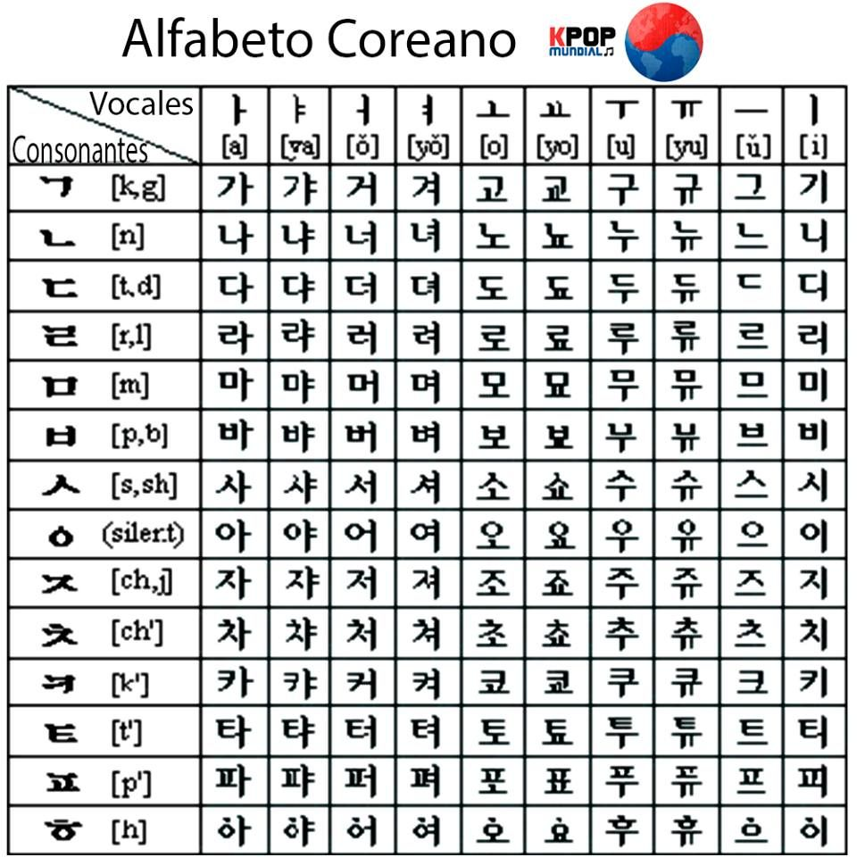

COREA DEL SUR
SUR
CO
REA
HISTORIA
RESTAURANTES
LUGARES
¿CON QUIEN IRIA?
ITINERARIO
Seúl
Seúl es disparatadamente genial. Arquitectura futurista por todas partes, increíbles centros comerciales con las últimas tendencias de moda, bares de karaoke y una asombrosa cultura ancestral. Da un paseo por el Bukchon Hanok, admira el palacio de Gyeongbokgung y come kimchi hasta hartarte. Seúl es también una de las principales ciudades inteligentes del mundo, así que es increíblemente innovadora y moderna.
K-Pop
¿Has oído hablar de BTS? «La banda de chicos más importante del mundo», según los medios de comunicación internacionales, fue el primer grupo coreano que logró ponerse a la cabeza de la lista Billboard 200 y es la cuenta coreana de Twitter con mayor número de seguidores. Los «Bangtan Boys» son superelegantes y personifican el género K-Pop con pegadizas melodías hip-hop y dance-pop. Si quieres iniciarte en la música coreana, escucha su segundo álbum, Wings. Luego, busca K-Pop en YouTube y adéntrate en un nuevo mundo.
Moda y belleza
En los últimos años, la moda y la belleza contemporáneas han despuntado en Corea del Sur. A lo grande. Inspiradas en parte en las tendencias occidentales, la K-Beauty y la K-Fashion se han convertido rápidamente en el sello de la cultura surcoreana. La Seoul Fashion Week reúne a coreanos vestidos elegantemente con una variedad de colores y patrones y todo tipo de estilos, desde ropa de calle informal hasta conjuntos «kawaii». Pero, ¿qué es kawaii?, te preguntarás. El término kawaii define todo lo que es bonito: por ejemplo, Hello Kitty o algunos tipos de manga. Esta moda alternativa está teniendo una gran influencia en la forma de vestir de personas de todo el mundo.
Idioma
Hablar coreano está muy de moda. Por un lado, es un idioma importante de cara al futuro, sobre todo teniendo en cuenta la pujante y tecnológicamente avanzada economía del país. Por otro lado, aunque el coreano es solo el decimoséptimo idioma más hablado en el mundo, quedará impresionante en tu currículum. Ah, y eso sin mencionar todas las series dramáticas coreanas que podrás ver si dominas el idioma. Echa un vistazo en YouTube, son muy… dramáticas. (Y asombrosas).
KOREA
DRAMAS
KPOP
MODA
IDIOMA

KPOP